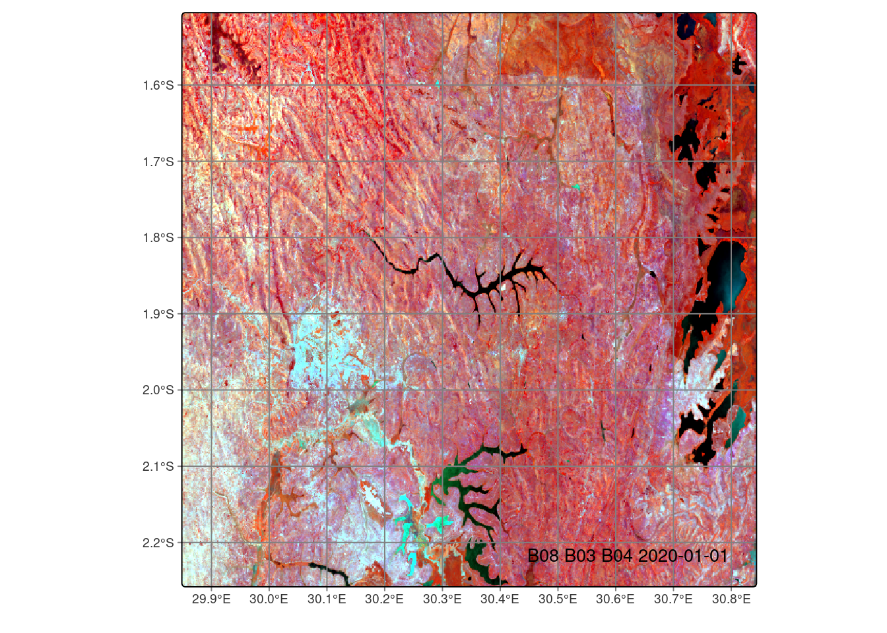
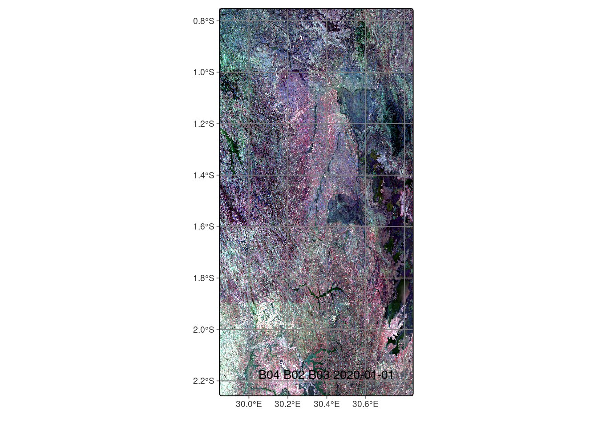
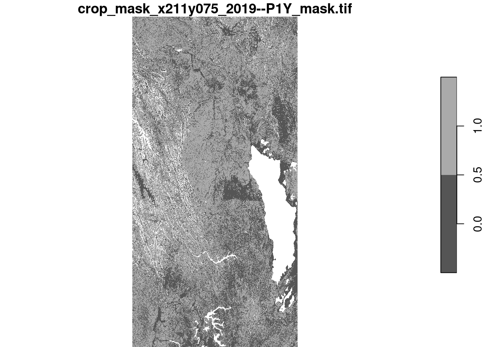
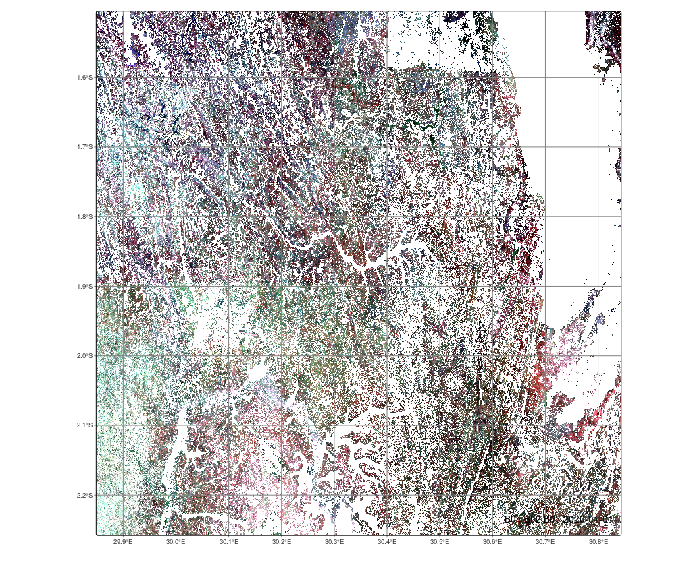
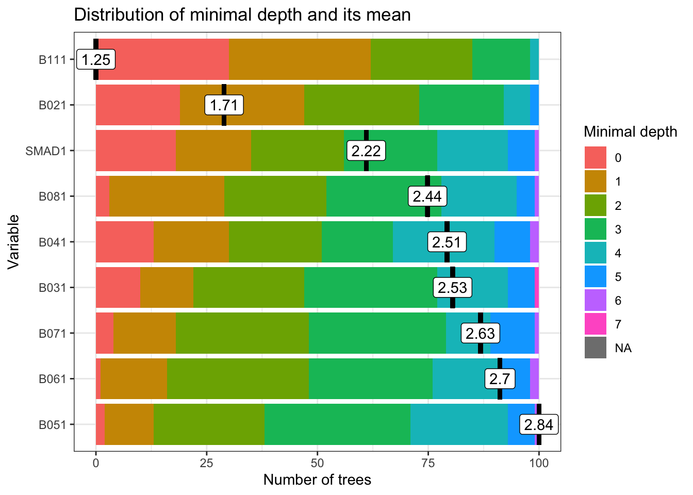
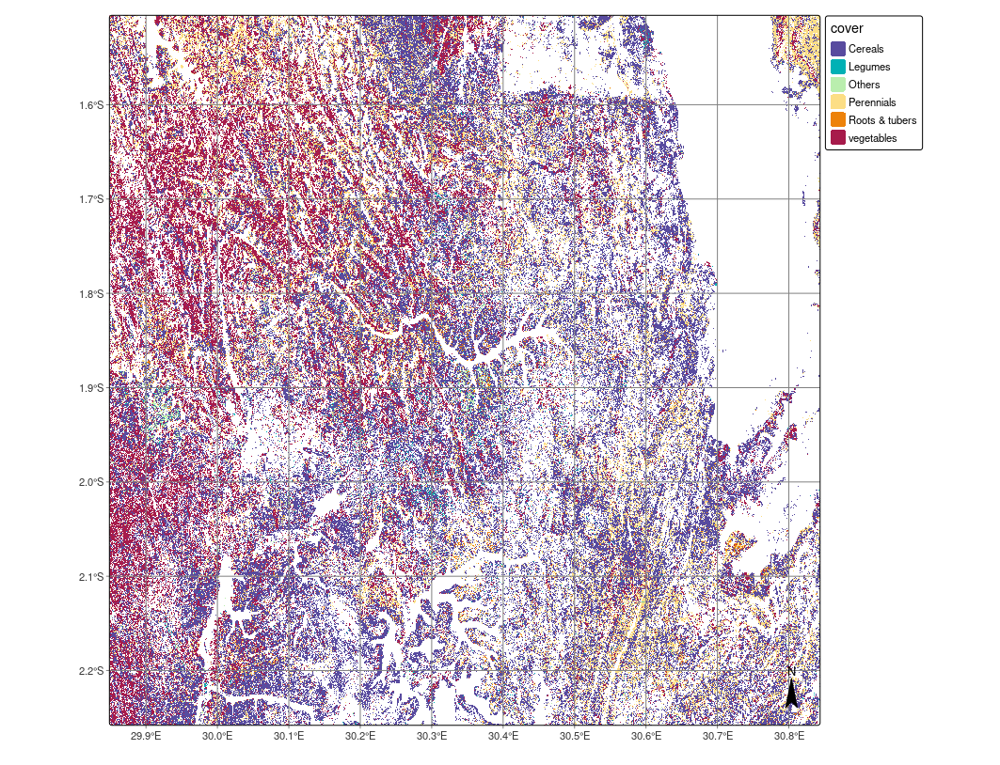

library(sits) # satellite image time series package
library(sf) # simple features package for spatial data
library(arrow) # back-end C++ integration
library(rstac) # load spatial data with STAC
library(stars) # spatiotemporal arrays, raster and vector data
library(terra) # spatial data analysis
library(tmap) # thematic maps
library(tidyverse) # collection of data management packages18 Agricultural Mapping with Digital Earth Africa
18.1 Overview
Digital Earth Africa offers continental-scale satellite-derived data products and provides guidance on their application in analytical workflows. This chapter demonstrates the use of high quality, cloud-free, geomedian composite images with median absolute deviations (GeoMADs) for crop type mapping. Digital Earth Africa’s GeoMADs are applied to a classification framework in the satellite image time series (sits) package in the R language.
The chapter demonstrates how high-quality, ‘off-the-shelf’ satellite image composites can overcome common challenges in classification workflows, such as the ‘curse of dimensionality’ and computational demand. It also introduces readers and users to Digital Earth Africa products and services, and modes of access, especially through the sits R package.
The chapter covers the following steps:
- Background to Digital Earth Africa data products and services.
- The
sitspackage and interaction with Digital Earth Africa. - Geomedian composite images and their application in classification workflows.
- Sourcing, loading, and inspecting reference data for crop type mapping.
- Loading Digital Earth Africa data with both
sitsandrstac. - Masking satellite data to cropland.
- Dealing with class imbalance in reference data.
- Training and evaluating machine learning models for crop type mapping.
- Producing a crop type map.
18.2 Digital Earth Africa products and services
Digital Earth Africa provides open access to over 80 spatial datasets covering the African continent. They cover thematics including land cover, coasts, agriculture, topography, water, and vegetation. These datasets can be explored in several platforms. The Digital Earth Africa Explorer displays metadata for each dataset, including availability in space and time. It also enables download of single band .tif files.
Digital Earth Africa data can be visualised in the Digital Earth Africa Maps platform. This platform also supports basic visual analysis including differencing and comparison.
The Digital Earth Africa Sandbox is a JupyterHub computing environment where users can interact with Digital Earth Africa data using Python. The Sandbox provides a direct connection to the Digital Earth Africa implementation of the Open Data Cube, so datasets can easily be queried.
Digital Earth Africa data is also retrievable using the STAC library through packages such as odc-stac (Python) and rstac (R). Digital Earth Africa maintains a repository of odc-stac examples. This chapter uses the sits R package to access and analyse Digital Earth Africa data for the purposes of agricultural mapping and monitoring.
18.3 R sits and Digital Earth Africa
The Satellite Image Time Series Analysis on Earth Observation Data Cubes (sits) package enables workflows to be conducted on Earth Observation data cubes, such as data available from Digital Earth Africa.
Digital Earth Africa datasets available in the sits package are:
Sentinel-2 Level 2A Surface Reflectance (
SENTINEL-2-L2A)Landsat 5, 7, 8 and 9 Surface Reflectance (
LS5-SR,LS7-SR,LS8-SR&LS9-SR)ALOS-PALSAR SAR L-band images from 2007-2010 and 2015-2022 (
ALOS-PALSAR-MOSAIC)Monthly NDVI mean and anomalies (
NDVI-ANOMALY)Monthly and daily rainfall data from the Climate Hazards Group InfraRed Precipitation with Station (CHIRPS) data initiative (
RAINFALL-CHIRPS-MONTHLY&RAINFALL-CHIRPS-DAILY)Copernicus digital elevation model in 30-m resolution (
COP-DEM-30)Annual geomedian composite images for Landsat-8 and Landsat-9 combined] (
GM-LS8-LS9-ANNUAL)Annual geomedian composite images for Sentinel-2 (
GM-S2-ANNUAL)Rolling three-month geomedian composite images for Sentinel-2 (
GM-S2-ROLLING)Semi-annual (six monthly) geomedian composite images for Sentinel-2 (
GM-S2-SEMIANNUAL)
Digital Earth Africa platforms are built on the Open Data Cube which uses Python for many applications. However, the sits package builds upon the rstac package which integrates with Digital Earth Africa through Spatio-Temporal Asset Catalogs (STAC). Digital Earth Africa data can therefore be loaded into cubes and other forms amenable to analysis in R.
The analytical component of the chapter begins with loading packages required for the crop type mapping workflow.
18.4 Digital Earth Africa Geomedians (GeoMADs)
This chapter will focus on the application of cloud-free geometric median (geomedian) composite images as input data for agricultural mapping. Surface reflectance data collected at regular intervals are often used as input data in machine learning workflows for agricultural mapping such as cropland extent mapping and crop-type mapping. However, single observations can be affected by cloud or other interferences, and are subject to noise. Cloud-free geomedian composite images preserve the high-dimensional relationships between spectral bands and provide a single, high-quality observation for each band over a given period [1]. This reduces the dimensionality of the data and therefore the computational burden of running classification algorithms.
Digital Earth Africa’s geomedian products include measures of temporal variation as median absolute deviations (MADs) [2]. They are effectively a measure of temporal variation over the period covered by the geomedian. The MADs are therefore useful for change detection, or highlighting land classes undergoing frequent change, such as cropland subjected to patterns of cultivation, intense crop growth, and harvest. The combination of the geomedian and MADs is called the GeoMAD. MADs available in the Digital Earth Africa GeoMADs are the:
- Spectral Median Absolute Deviation (SMAD)
- Euclidean Median Absolute Deviation (EMAD)
- Bray-Curtis Median Absolute Deviation (BCMAD)
Geomedians have been a popular input dataset for machine learning classification workflows. For example, Digital Earth Africa’s cropland extent map is derived from the Sentinel-2 semiannual Geomedians [3]. The Digital Earth Africa geomedians have also been used for crop type mapping, irrigated area mapping, and monitoring vegetation dynamics [4]–[8].
18.5 Crop type mapping training data
Supervised classification requires reference data to train and validate models. For crop type mapping, this generally means spatial information collected from agricultural surveys is used. Field surveys are resource intensive and any field collected data is valuable, though may need manipulation before it is used in classification and mapping workflows.
There are several principles and guidelines that should be followed when collecting reference data for crop type mapping or assessing its value. The Group on Earth Observations, through the Joint Assessment for Crop Assessment and Monitoring, have published guidelines for cropland and crop type definition and field data collection [9]. The TetraTech Enabling Crop Analytics At Scale initiative have published guidelines for the collection of reference crop type data using ODK software. There are also numerous academic materials exploring various sampling techniques for crop type mapping field data collection [10], [11].
This chapter demonstrates the use of open-source reference data. In this case, data has been identified from the ESA World Cereal Reference Data Module [12]. Specifically, a collection of field data from the Muvumba River district of Rwanda in 2020 has been used. The field data was collected as part of the FAO WaPOR program. Alternative sources of field data include Source Cooperative, the EarthData Common Metadata Repository, and the Euro Data Cube. Institutions and users may also have their own reference datasets.
18.5.1 Load training data
The Muvumba data used in this workflow is stored as a .geoparquet file. The code chunk below downloads the file into a folder called ‘data’, stored within the local directory.
dir.create('data/ct_digital_earth_africa')
download.file(
url = "https://ewocstorage.blob.core.windows.net/public/2020_rw_wapor_1_point_111/2020_RWA_FAO-WAPOR-1_POINT_111.geoparquet",
method = "curl",
destfile = 'data/ct_digital_earth_africa/2020_rwa.geoparquet'
)Following the download of the the .geoparquet file, the data must be read into R to allow further analysis. The arrow package is used to handle the .geoparquet and the data is read as a simple features object.
The data can then be inspected. It contains 1,143 observations and 31 variables which include the spatial location, crop type, irrigation status and type, and comments on crop condition.
rwa_2020 <- st_as_sf(
read_parquet('data/ct_digital_earth_africa/2020_rwa.geoparquet'),
coords = c("X (Longitu", "Y (Latitud"),
crs = 4326
)
rwa_2020Simple feature collection with 1143 features and 30 fields
Geometry type: POINT
Dimension: XY
Bounding box: xmin: 30.22792 ymin: -1.650888 xmax: 30.46668 ymax: -1.051955
Geodetic CRS: WGS 84
# A tibble: 1,143 × 31
Id Date `Z (Altitud` `Location A` `Pictures L` `Land cover` `Type of Cr`
* <chr> <chr> <dbl> <dbl> <chr> <chr> <chr>
1 3022 2023-… 1367. 3.6 https://dri… cropland maize
2 3106 2024-… 1296. 4.5 https://dri… cropland vegetables
3 3106 2024-… 1293 4.7 https://dri… cropland vegetables
4 3107 2024-… 1355. 2.9 https://dri… cropland maize
5 3107 2024-… 1358. 2.1 https://dri… cropland maize
6 3107 2024-… 1355. 2.9 https://dri… cropland maize
7 3107 2024-… 1358. 2.1 https://dri… cropland maize
8 3114 2025-… 1350 2.3 https://dri… cropland rice
9 3114 2025-… 1350 2.3 https://dri… cropland rice
10 3115 2025-… 1326. 3 https://dri… cropland rice
# ℹ 1,133 more rows
# ℹ 24 more variables: `Water sour` <chr>, Irrigation <chr>,
# `Field size` <chr>, `Canopy cov` <chr>, Note <chr>, PARENT_KEY <chr>,
# KEY <chr>, ValidityTi <chr>, layer <chr>, sampleID <chr>,
# ewoc_code <int64>, valid_time <dttm>, sample_id <chr>,
# irrigation_status <int>, extract <int>, quality_score_lc <int>,
# quality_score_ct <int>, ` h3_l3_cell` <chr>, …The reference data can be plotted in space using ggplot. This provides an indication of the spatial distribution of different crop types. Several lines or transects are easily observable in the data, which could be assumed to relate to access points such as roads or rivers.
The distribution of crop types can also be quickly assessed. This shows that a very large proportion of observations are maize, with rice, bananas, and vegetables also well represented. There are very few samples for some classes such as sugarcane and sweet potatoes, which will be dealt with later. This step also confirms that the classes look acceptable for now with no duplicates or any other concerns.
18.6 Digital Earth Africa data
Now that the reference data has been loaded and inspected, satellite data can be loaded to serve as input data in the classification. The code chunk below loads the Digital Earth Africa Sentinel-2 GeoMAD including all surface reflectance bands and the SMAD band. Measurements and further product information can be found the in DE Africa Explorer and the product specifications.
The GeoMAD is loaded for the year 2020 because that’s when the reference data was collected. The region of interest (roi) is set as the bounding box of the reference data collection. EPSG:6933 is the native coordinate reference system for the GeoMADs and most Digital Earth Africa products, so it’s used for loading the cube.
dea_s2_cube <- sits_cube(
source = "DEAFRICA",
collection = "GM-S2-ANNUAL",
roi = st_transform(st_as_sfc(st_bbox(rwa_2020)), "EPSG:6933"),
bands = c("SMAD", "B02", "B03", "B04", "B05", "B06", "B07", "B08", "B11"),
start_date = "2020-01-01",
end_date = "2020-12-30",
crs = "EPSG:6933",
progress = FALSE
)Plotting the Sentinel-2 GeoMAD in false colour shows the high-quality, cloud-free nature of the composite image. Plotting the near infrared band (B08) in the red channel means that areas covered with vegetation appear deep red and water appears blue or black.
Data cubes loaded with the sits package are stored in tiles. In this case, the region of interest has resulted in two tiles being loaded, and the second tile is plotted.
plot(dea_s2_cube, red = "B08", blue = "B04", green = "B03", tile = dea_s2_cube$tile[[2]])
18.6.1 Create a mosaic
As this workflow is producing a crop type map, the surface reflectance data will be masked to cropland areas only. There are numerous ways this can be achieved. In this case, the masking will be conducted with functions from the terra package.
First, a mosaic is created by fusing the tiles in the geomedian data cube. This is plotted in true colour and provides an indication of the spatial extent of the analysis.
mosaic <- sits_mosaic(
cube = dea_s2_cube,
crs = "EPSG:6933",
output_dir = "data/ct_digital_earth_africa",
multicores = 2,
progress = FALSE)
plot(mosaic, red = "B04", blue = "B03", green = "B02")
Since the mosaic images are stored as .tif files in the data directory, they can be loaded as raster objects for application in the terra package.
mosaic_files <- list.files('data/ct_digital_earth_africa', pattern="*MOSAIC*", full.names = TRUE)
rast_list <- list()
for (i in 1:length(mosaic_files)) {
rast_list[i] <- rast(mosaic_files[i])
}
mosaic_rast <- rast(rast_list)18.7 Cropland Extent Map
18.7.1 Cropland extent loading with rstac
The surface reflectance data in the Sentinel-2 GeoMAD will be masked to cropland using the Digital Earth Africa cropland extent map. This map itself was produced using GeoMADs. In a study comparing the accuracy of 11 open source land cover maps for identifying cropland in Sub-Saharan Africa, the Digital Earth Africa cropland extent maps was “the map that most frequently has the highest score across all metrics and countries” [13]. However, it was noted that there was low recall in some locations. The product documentation provides further information on accuracy assessment. In this workflow, it’s also convenient that the geometric specifications of the cropland extent map match the GeoMAD given its derivation from that product.
The code chunk below uses rstac functions (on which the sits package is built) to load the Digital Earth Africa cropland extent map. Search the spatiotemporal asset catalog (STAC) returns two items in this case. They are tiles which match the original tiles in the GeoMAD data cube.
s_obj <- stac("https://explorer.digitalearth.africa/stac")
bbox <- st_bbox(rwa_2020)
area_of_interest = cql2_bbox_as_geojson(bbox)
time_range <- cql2_interval("2019-01-01", "2020-01-01")
stac_items <- s_obj |>
ext_filter(
collection == "crop_mask" &&
t_intersects(datetime, {{time_range}}) &&
s_intersects(geometry, {{area_of_interest}})
) |>
post_request()
stac_items <- stac_items |>
assets_select(asset_names = c("mask"))
sf <- items_as_sf(stac_items)
stac_items###Items
- matched feature(s): 2
- features (2 item(s) / 0 not fetched):
- 98d720c0-4c72-5f0e-8dda-4bf11a216296
- db1bbdcb-039b-5158-b7d5-b1f55271b1b8
- assets: mask
- item's fields:
assets, bbox, collection, geometry, id, links, properties, stac_extensions, stac_version, typeThe STAC items can be loaded easily as stars objects then the tiles can be merged into a mosaic and plotted. The output shows that excluded areas are coded NA, non-crop is coded 0, and crop areas are coded 1, as per the product definition. A large portion of the region of interest is cropland.
crop_mask = list()
for (i in 1:length(stac_items$features)) {
crop_mask[[i]] <- stac_items$features[[i]] |>
assets_url(append_gdalvsi = TRUE) |>
read_stars() |>
st_set_crs('+proj=cea +lat_ts=30 +lon_0=0 +x_0=0 +y_0=0 +datum=WGS84 +units=m +no_defs +type=crs')
}
crop_mask_mos <- st_mosaic(crop_mask[[1]], crop_mask[[2]])
plot(crop_mask_mos)
18.7.2 Mask the GeoMAD to cropland
The crop mask mosaic is written to a local directory so it can then be loaded as a terra object and used to mask the GeoMAD mosaic. This is achieved using the terra function mask.
crop_mask_local <- write_stars(
crop_mask_mos,
"data/ct_digital_earth_africa/crop_mask_20190101.tif",
overwrite=TRUE
)
cm_rast <- rast("data/ct_digital_earth_africa/crop_mask_20190101.tif")
mosaic_rast_masked <- mask(mosaic_rast, cm_rast, maskvalues = c(0, NA))The masked surface reflectance data is exported to a local directory so a data cube can be built from it. A sits cube requires single band .tifs. Arranging the data in tiles is also helpful for parallel computing and efficiency when conducting classification. For these reasons, the makeTiles function from terra is used to revert the mosaic into original tile configuration. A nested for loop is then used to export .tif files for each band of each tile.
These masking steps can be considered a ‘work around’, and there are several other ways the masking could be conducted including by maintaining the tiled structure of both the GeoMAD and cropland extent data. In this case, the steps used help to visualise the process undertaken for the purposes of demonstration, and understand how data is stored and transferred between different objects.
dir.create('data/ct_digital_earth_africa/tiles')
dir.create('data/ct_digital_earth_africa/masked')
makeTiles(
mosaic_rast_masked,
project(
vect(sf), '+proj=cea +lat_ts=30 +lon_0=0 +x_0=0 +y_0=0 +datum=WGS84 +units=m +no_defs +type=crs'
),
filename = "data/ct_digital_earth_africa/tiles/mosaic_rast_tile_.tif"
)
for (x in 1:length(list.files('data/ct_digital_earth_africa/tiles'))) {
for (i in 1:nlyr(mosaic_rast_masked)) {
writeRaster(
as.list(rast(
list.files('data/ct_digital_earth_africa/tiles', full.names = TRUE)[x]
))[[i]],
paste(
"data/ct_digital_earth_africa/masked/",
str_sub(names(mosaic_rast_masked)[i], 1, 15),
dea_s2_cube$tile[x],
str_sub(names(mosaic_rast_masked)[i], 22),
".tif",
sep = ""
),
overwrite = TRUE
)
}
}18.7.3 Create a new data cube
A new data cube needs to be created which refers to the masked surface reflectance data. This cube will be created from local files, so the relevant directory is specified in the sits_cube function. The parse_info argument specifies how the filenames can be read. Other parameters like the period and region of interest are the same as the original GeoMAD data cube.
dea_s2_masked <- sits_cube(
source = "DEAFRICA",
collection = "GM-S2-ANNUAL",
data_dir = "data/ct_digital_earth_africa/masked",
bands = c("SMAD", "B02", "B03", "B04", "B05", "B06", "B07", "B08", "B11"),
start_date = "2020-01-01",
end_date = "2020-12-30",
roi = st_transform(st_as_sfc(st_bbox(rwa_2020)), "EPSG:6933"),
crs = "EPSG:6933",
parse_info = c("satellite", "sensor", "tile", "date", "band"),
progress = FALSE
)Plotting the masked data cube in true colour shows the effect of masking. Now, the surface reflectance data relates only to cropland (in accordance with the Digital Earth Africa cropland extent map), and crop type mapping can proceed.
plot(dea_s2_masked, red = "B04", blue = "B03", green = "B02")
18.8 Train classification model
18.8.1 Reduce class imbalance
Both the reference data and input data are now in place, so model training can proceed. However, some further cleaning and balancing of data may be required. This includes dropping NA values from the reference data, completed in the code chunk below. The sits_get_data function is used to collect values from the GeoMAD that relate to each observation from the reference data.
This case is a bit unusual because there is only one time step, the year of 2020, in the ‘time series’. This is because one of the purposes of the GeoMAD composite is to preserve high-dimensional information in a composite image through the use of geometric median values and the MAD bands. This reduces the volume of data and computational burden necessary for classification. Beyond this example, users may consider the three-month rolling or semiannual GeoMADs if a richer time series is desired.
The code chunk below removes some masking objects that are no longer required from memory with the rm() function.
Once NA values are removed, there are 13 crop type classes of which 47% are maize. The reference data is quite unbalanced with numerous classes each accounting for less than 5% of the total data volume.
rm(crop_class, crop_mask_local, crop_mask, crop_mask_mos)
rwa_2020_crops <- rwa_2020 |>
drop_na("Type of Cr")
tseries <- sits_get_data(
cube = dea_s2_masked,
label_attr = "Type of Cr",
samples = rwa_2020_crops
)
summary(tseries)# A tibble: 13 × 3
label count prop
<chr> <int> <dbl>
1 banana 107 0.128
2 beans 22 0.0264
3 cassava 14 0.0168
4 fruit 27 0.0324
5 irishpotatoes 7 0.00839
6 maize 392 0.470
7 Others 8 0.00959
8 rice 81 0.0971
9 sorghum 52 0.0624
10 soybeans 18 0.0216
11 sugarcane 3 0.00360
12 sweet_potatoes 6 0.00719
13 vegetables 97 0.116 The sits function reduce_imbalance makes corrections to imbalanced training data by over and under sampling. Self organised mapping (SOM) is used for under sampling and synthetic minority oversampling technique (SMOTE) is used for over sampling [15]. Values are entered for the number of samples to over and under sample.
The result of the imbalance reduction is returned in the output and shows that each class accounts for at least 5% of the observations. If there was a particular interest in mapping uncommon crops, there could be further balance correction undertaken. Several methods have been proposed and investigated for dealing with class imbalance problems in crop type mapping [16].
balanced_samples <- sits_reduce_imbalance(
samples = tseries,
n_samples_over = 50,
n_samples_under = 150,
multicores = 2)
# Show summary of balanced samples
summary(balanced_samples)# A tibble: 13 × 3
label count prop
<chr> <int> <dbl>
1 banana 107 0.115
2 beans 50 0.0536
3 cassava 50 0.0536
4 fruit 50 0.0536
5 irishpotatoes 50 0.0536
6 maize 196 0.210
7 Others 50 0.0536
8 rice 81 0.0868
9 sorghum 52 0.0557
10 soybeans 50 0.0536
11 sugarcane 50 0.0536
12 sweet_potatoes 50 0.0536
13 vegetables 97 0.104 18.8.2 Train random forest model
Following correction of unbalanced samples, the training data can be used to prepare a classification model. The sits_train function supports several machine learning algorithms. In this case, random forest is used. Random forest is a non-parametric ensemble learning method that, while often outperformed by deep learning models in very large or complex data, offers greater interpretability through tools such as variable importance metrics and partial dependence plots.
Prior to model training, the time series data itself is cleaned. This removes NA values from the tibble objects nested within the balanced_samples tibble that may arise from missing pixels or other issues.
Plotting the model object shows the distribution of minimal depth and its mean. Minimal depth refers to the earliest point at which a variable is used in the decision tree. That is, the shortest path from the root of the tree to the first node where the variable is used for splitting. The bars in the plot show the distribution of minimal depth among the 100 trees in the random forest, and the mean minimal depth value is plotted and annotated. A lower minimal depth value means the variable is used earlier in the tree and can therefore be interpreted as being more important for distinguishing between classes. Variables with high minimal depth values could be omitted from the model.

18.8.3 Perform a cross-validation
The sits package provides a function for performing cross-validation as an accuracy assessment for classification models. The k-fold cross validation method splits the data into k-subsets. For each subset, a sample of data is withheld while the model is trained on all other subsets and then validated on the subset that was withheld. This process returns a confusion matrix and accuracy statistics.
The overall accuracy statistic of 61.4% might be considered acceptable, especially given the large number (13) of classes and class imbalance. However, some classes, such as beans and sorghum, have quite low precision, recall and F1 values, which indicate how accurately individual classes are classified. If there was a particular interest in mapping these specific crop types, further class imbalance treatments or other approaches, such as introducing further predictor variables, might be considered. In this case, the next step will be combining classes to reduce issues associated with class imbalance.
rfor_validate_rwa <- sits_kfold_validate(
samples = balanced_samples,
folds = 5,
ml_method = sits_rfor(),
multicores = 2,
progress = FALSE
)
rfor_validate_rwaConfusion Matrix and Statistics
Reference
Prediction maize beans cassava fruit irishpotatoes Others soybeans
maize 127 8 4 4 2 7 11
beans 0 17 0 5 2 2 1
cassava 6 4 38 0 1 9 0
fruit 0 1 0 26 0 1 1
irishpotatoes 2 4 0 2 37 4 3
Others 0 4 5 0 1 21 2
soybeans 11 5 0 2 2 1 31
sweet_potatoes 2 1 0 1 0 0 0
banana 14 1 3 5 0 4 0
vegetables 20 3 0 2 5 1 0
rice 6 0 0 2 0 0 1
sorghum 8 2 0 1 0 0 0
sugarcane 0 0 0 0 0 0 0
Reference
Prediction sweet_potatoes banana vegetables rice sorghum sugarcane
maize 1 18 33 11 37 0
beans 0 0 1 0 0 0
cassava 0 2 0 1 1 0
fruit 0 0 0 0 0 1
irishpotatoes 0 0 0 0 0 0
Others 0 0 0 0 0 0
soybeans 0 0 1 0 1 0
sweet_potatoes 45 2 3 6 0 0
banana 2 78 8 2 6 0
vegetables 0 4 49 3 3 1
rice 2 0 2 57 1 1
sorghum 0 3 0 1 3 0
sugarcane 0 0 0 0 0 0
Overall Statistics
Accuracy : 0.5971
95% CI : ( 0.5639, 0.6296 )
Kappa : 0.5408
Statistics by Class:
Class: maize Class: beans Class: cassava Class: fruit
Prod Acc (Recall) 0.6480 0.3400 0.7600 0.5200
User Acc (Precision) 0.4829 0.6071 0.6129 0.8667
F1 score 0.5534 0.4359 0.6786 0.6500
Class: irishpotatoes Class: Others Class: soybeans
Prod Acc (Recall) 0.7400 0.4200 0.6200
User Acc (Precision) 0.7115 0.6364 0.5741
F1 score 0.7255 0.5060 0.5962
Class: sweet_potatoes Class: banana Class: vegetables
Prod Acc (Recall) 0.9000 0.7290 0.5052
User Acc (Precision) 0.7500 0.6341 0.5385
F1 score 0.8182 0.6783 0.5213
Class: rice Class: sorghum Class: sugarcane
Prod Acc (Recall) 0.7037 0.05769 0
User Acc (Precision) 0.7917 0.16667 NaN
F1 score 0.7451 0.08571 NA18.8.4 Combine crop types into groups
African agriculture is often characterised by great diversity of crop types and varieties, and heterogeneity of crop types and farming practices in space. This can make mapping exercises more challenging than in more uniform and homogenous agricultural landscapes with large field sizes. Sometimes, the large number of crop types can mean that an aggregated approach can produce more useful outputs. In this case, crop classes are combined into their ‘crop groups’ based on the Indicative Crop Classification (ICC) developed by FAO in the guidelines for agricultural censuses. This approach is also adopted in the Joint Assessment for Crop Assessment and Monitoring guidelines for cropland and crop type definition and field data collection [9].
In this workflow, crop types are aggregated into six crop groups.
tseries_comb <- tseries
tseries_comb$label[tseries_comb$label %in% c("irishpotatoes", "sweet_potatoes", "cassava")] <- "Roots & tubers"
tseries_comb$label[tseries_comb$label %in% c("sorghum", "rice", "maize")] <- "Cereals"
tseries_comb$label[tseries_comb$label %in% c("fruit", "banana")] <- "Perennials"
tseries_comb$label[tseries_comb$label %in% c("beans", "soybeans")] <- "Legumes"
tseries_comb$label[tseries_comb$label %in% c("sugarcane")] <- "Others"
summary(tseries_comb)# A tibble: 6 × 3
label count prop
<chr> <int> <dbl>
1 Cereals 525 0.629
2 Legumes 40 0.0480
3 Others 11 0.0132
4 Perennials 134 0.161
5 Roots & tubers 27 0.0324
6 vegetables 97 0.116 The sits_reduce_imbalance function is again used to produce a dataset where each class represents at least 10% of total observations.
balanced_samples_comb <- sits_reduce_imbalance(
samples = tseries_comb,
n_samples_over = 80,
n_samples_under = 150,
multicores = 2)
# Show summary of balanced samples
summary(balanced_samples_comb)# A tibble: 6 × 3
label count prop
<chr> <int> <dbl>
1 Cereals 196 0.294
2 Legumes 80 0.120
3 Others 80 0.120
4 Perennials 134 0.201
5 Roots & tubers 80 0.120
6 vegetables 97 0.14518.8.5 Perform a cross-validation on crop groups
The confusion matrix and accuracy statistics for the classification on crop groups show an overall accuracy value of 65%, and improvement over the individual crop type classification. Furthermore, each group has an F1 score greater than 0.5. Perennials (the majority of which could be assumed to be bananas based on the original reference data) and cereals are most accurately classified.
balanced_samples_comb <- balanced_samples_comb |>
mutate(time_series = map(time_series, ~ drop_na(.x))) |>
filter(map_lgl(time_series, ~ nrow(.x) > 0))
rfor_model_comb <- sits_train(
balanced_samples_comb,
ml_method = sits_rfor()
)
rfor_comb_validate_rwa <- sits_kfold_validate(
samples = balanced_samples_comb,
folds = 5,
progress = FALSE,
ml_method = sits_rfor(),
multicores = 2
)
rfor_comb_validate_rwaConfusion Matrix and Statistics
Reference
Prediction Cereals Legumes Others Roots & tubers Perennials vegetables
Cereals 155 10 12 10 33 32
Legumes 8 54 8 7 0 4
Others 1 8 42 16 0 0
Roots & tubers 0 8 14 43 2 1
Perennials 22 0 2 3 89 11
vegetables 10 0 2 1 10 49
Overall Statistics
Accuracy : 0.6477
95% CI : ( 0.6101, 0.684 )
Kappa : 0.5575
Statistics by Class:
Class: Cereals Class: Legumes Class: Others
Prod Acc (Recall) 0.7908 0.6750 0.5250
User Acc (Precision) 0.6151 0.6667 0.6269
F1 score 0.6920 0.6708 0.5714
Class: Roots & tubers Class: Perennials Class: vegetables
Prod Acc (Recall) 0.5375 0.6642 0.5052
User Acc (Precision) 0.6324 0.7008 0.6806
F1 score 0.5811 0.6820 0.579918.9 Create a classified map
Finally, a classified map can be produced based on the trained classification model. This process is memory hungry so the number of cores has been limited to 1. A garbage collect process is also initiated prior to classification by calling the gc() command. This maximises the volume of memory available for the classification process.
The output of the sits_classify function is a .tif file of classification probabilities stored in the output directory provided to the function.
gc()
crop_probs <- sits_classify(
data = dea_s2_masked,
ml_model = rfor_model_comb,
output_dir = "data/ct_digital_earth_africa",
version = "rf-raster_comb",
multicores = 1,
memsize = 16,
progress = FALSE
)The probability layers can be used to generate a classified map with labels showing the distribution of predicted crop groups in space.
crop_class <- sits_label_classification(
cube = crop_probs,
multicores = 4,
memsize = 12,
output_dir = "data/ct_digital_earth_africa",
version = "rf-raster_comb",
progress = FALSE
)
# Plot the thematic map
plot(crop_class, legend_position="outside")
18.10 Conclusions
This chapter has presented a workflow which draws on open access data sources to produce a crop type and crop group map for an area of Rwanda. The workflow showcases how GeoMAD composite images can be a useful data source and produce reasonably accurate classifications, considering unbalanced training data and a challenging agricultural landscape characterised by heterogeneity and small fields. In this context, the workflow is representative of real-world crop type mapping challenges. However, this workflow should be considered as an introduction and starting point for development of more refined agricultural mapping. The accuracy of the classification could be improved by further refinement of training samples and the introduction of more predictor variables in the classification models. Furthermore, post-processing, such as spatial smoothing or object-based image analysis—may also enhance map quality by reducing noise and improving thematic coherence, including in the cropland extent map.
References
[1]
D. Roberts, N. Mueller, and A. Mcintyre, “High-dimensional pixel composites from earth observation time series,” IEEE Transactions on Geoscience and Remote Sensing, vol. 55, no. 11, pp. 6254–6264, 2017, doi: 10.1109/TGRS.2017.2723896.
[2]
D. Roberts, B. Dunn, and N. Mueller, “Open data cube products using high-dimensional statistics of time series,” in IGARSS 2018 - 2018 IEEE international geoscience and remote sensing symposium, 2018, pp. 8647–8650, doi: 10.1109/IGARSS.2018.8518312.
[3]
C. Burton et al., “Co-production of a 10-m cropland extent map for continental africa using sentinel-2, cloud computing, and the open-data-cube,” Jan. 2022, doi: 10.1002/essoar.10510081.1.
[4]
L. Liu et al., “National land cover and crop mapping through the digital earth africa platform,” in Space and geospatial technologies for the africa we want, 2024, pp. 353–362.
[5]
M. J. Wellington and L. J. Renzullo, “High-dimensional satellite image compositing and statistics for enhanced irrigated crop mapping,” Remote Sensing, vol. 13, no. 7, 2021, doi: 10.3390/rs13071300.
[6]
T. Weitkamp, G. Jan Veldwisch, P. Karimi, and C. de Fraiture, “Mapping irrigated agriculture in fragmented landscapes of sub-saharan africa: An examination of algorithm and composite length effectiveness,” International Journal of Applied Earth Observation and Geoinformation, vol. 122, p. 103418, 2023, doi: https://doi.org/10.1016/j.jag.2023.103418.
[7]
T. Weitkamp and P. Karimi, “Evaluating the effect of training data size and composition on the accuracy of smallholder irrigated agriculture mapping in mozambique using remote sensing and machine learning algorithms,” Remote Sensing, vol. 15, no. 12, 2023, doi: 10.3390/rs15123017.
[8]
J. A. Wardle, V. Sagan, and F. Mohammed, “USING OPEN DATA CUBE ON THE CLOUD TO INVESTIGATE FOOD SECURITY BY MEANS OF CROPLAND CHANGES IN DJIBOUTI,” The International Archives of the Photogrammetry, Remote Sensing and Spatial Information Sciences, vol. XLIII–B3–2022, pp. 1039–1044, 2022, doi: 10.5194/isprs-archives-XLIII-B3-2022-1039-2022.
[9]
P. Defourny, I. Jarvis, and X. Blaes, “JECAM guidelines for cropland and crop type definition and field data collection, JECAM,” JECAM Guidelines for cropland and crop type definition and field data collection, JECAM, 2014.
[10]
J. Fowler, F. Waldner, and Z. Hochman, “All pixels are useful, but some are more useful: Efficient in Situ data collection for crop-type mapping using sequential exploration methods,” International Journal of Applied Earth Observation and Geoinformation, vol. 91, p. 102114, 2020, doi: 10.1016/j.jag.2020.102114.
[11]
C. Lin, L. Zhong, X.-P. Song, J. Dong, D. B. Lobell, and Z. Jin, “Early- and in-season crop type mapping without current-year ground truth: Generating labels from historical information via a topology-based approach,” Remote Sensing of Environment, vol. 274, p. 112994, 2022, doi: https://doi.org/10.1016/j.rse.2022.112994.
[12]
S. Karanam et al., “WorldCereal reference data module (RDM),” 2024.
[13]
H. Kerner et al., “How accurate are existing land cover maps for agriculture in Sub-Saharan Africa?” Scientific Data, vol. 11, no. 1, p. 486, 2024, doi: 10.1038/s41597-024-03306-z.
[14]
N. V. Chawla, K. W. Bowyer, L. O. Hall, and W. P. Kegelmeyer, “SMOTE: Synthetic minority over-sampling technique,” Journal of Artificial Intelligence Research, vol. 16, no. 1, pp. 321–357, 2002.
[15]
L. A. Santos, K. R. Ferreira, G. Camara, M. C. A. Picoli, and R. E. Simoes, “Quality control and class noise reduction of satellite image time series,” ISPRS Journal of Photogrammetry and Remote Sensing, vol. 177, pp. 75–88, 2021, doi: 10.1016/j.isprsjprs.2021.04.014.
[16]
F. Waldner, Y. Chen, R. Lawes, and Z. Hochman, “Needle in a haystack: Mapping rare and infrequent crops using satellite imagery and data balancing methods,” Remote Sensing of Environment, vol. 233, p. 111375, 2019, doi: 10.1016/j.rse.2019.111375.